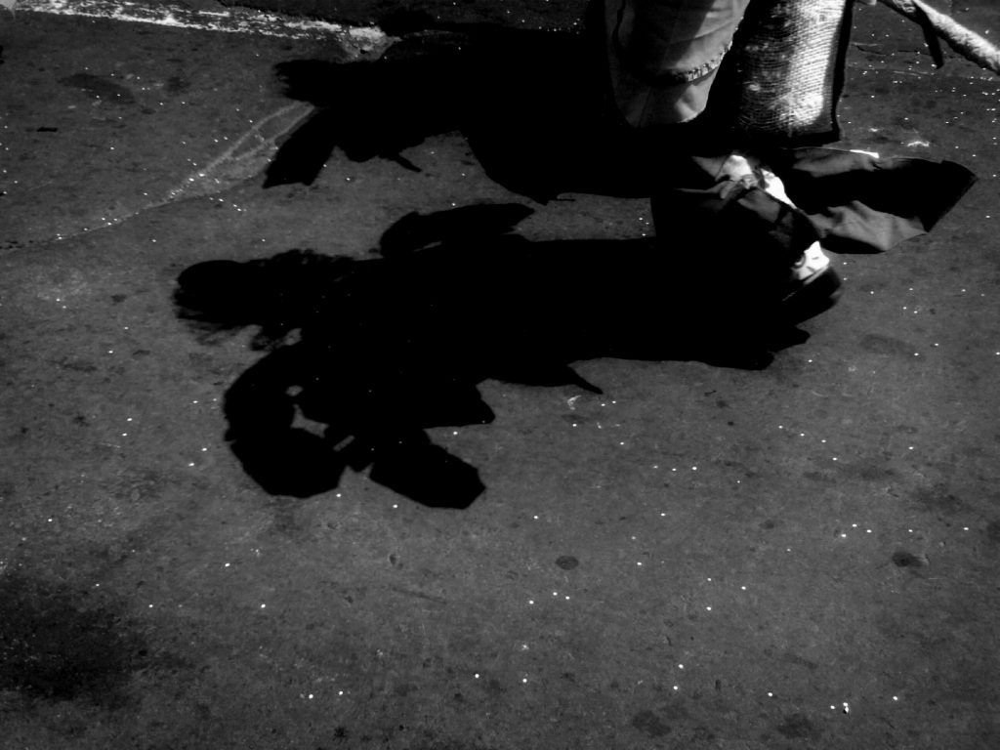
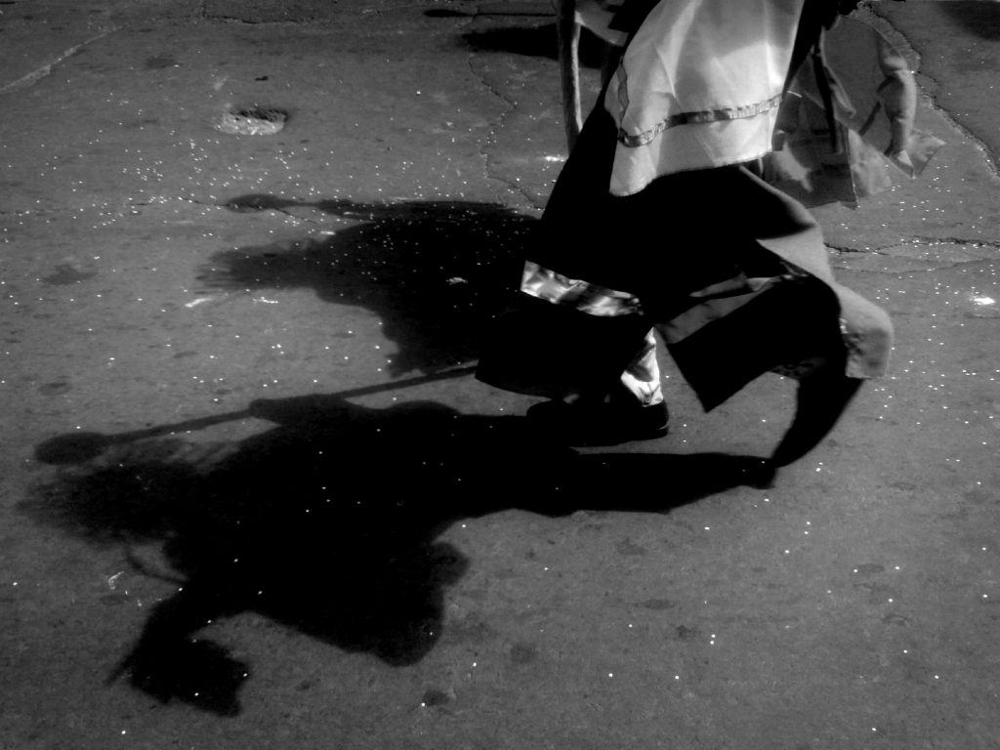
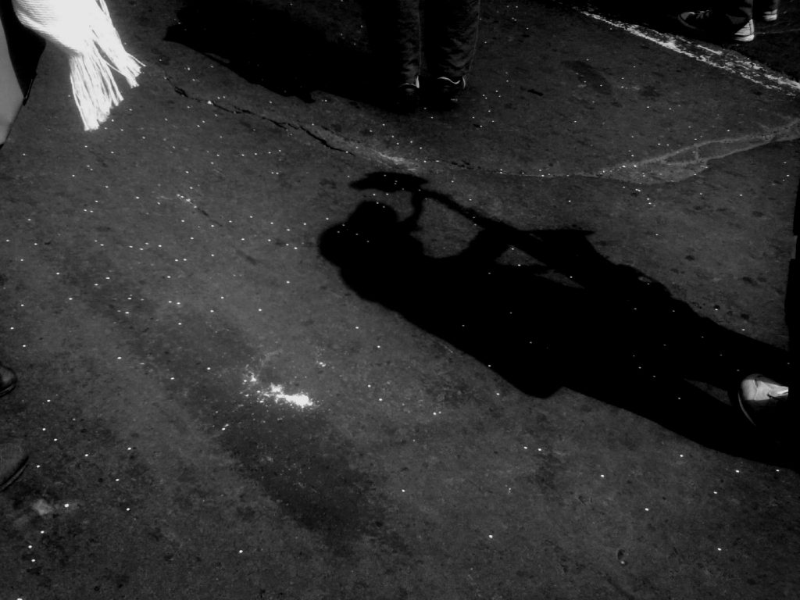
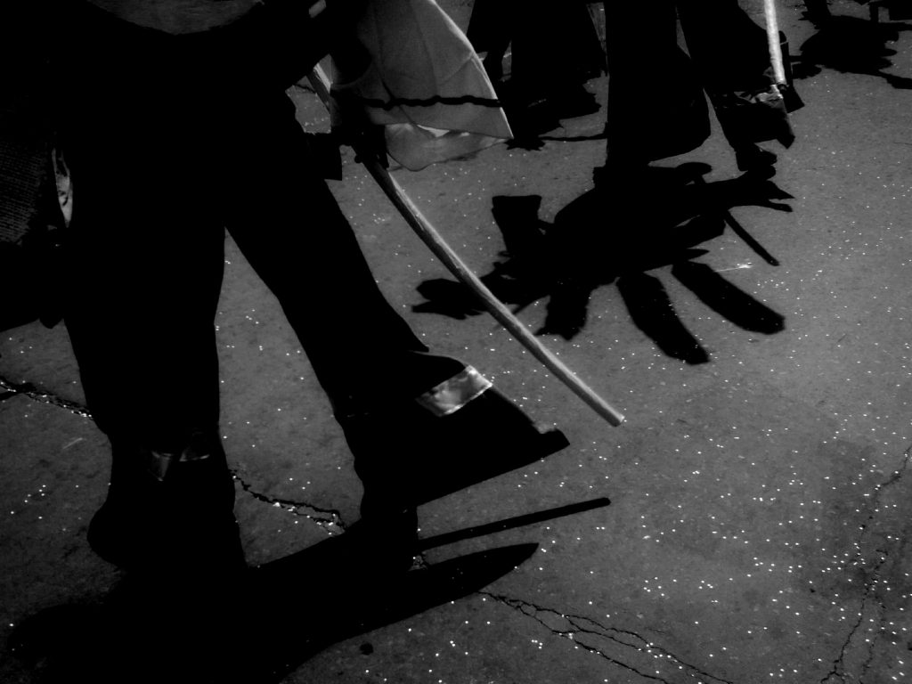
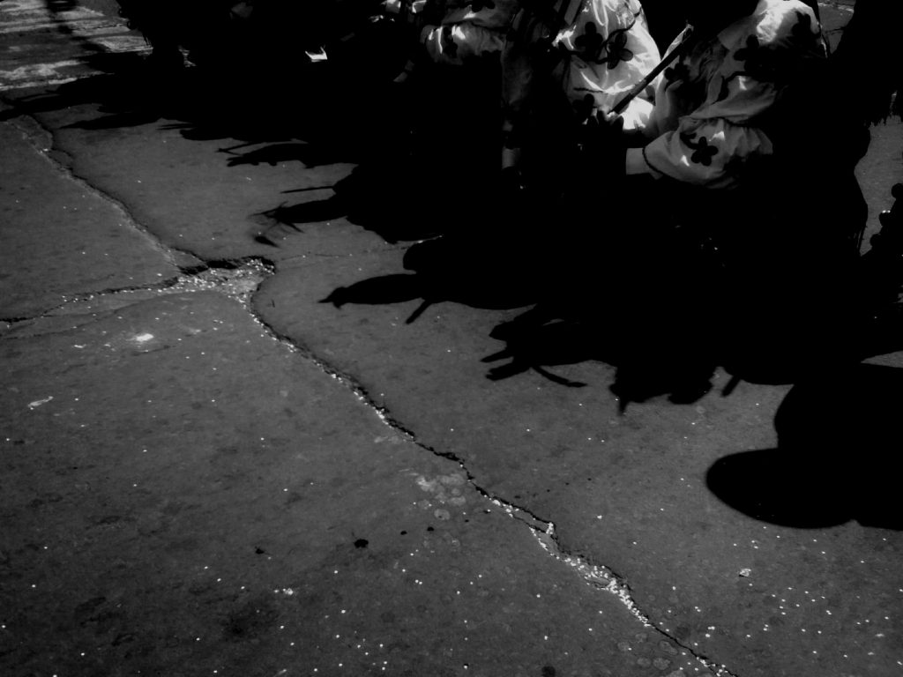
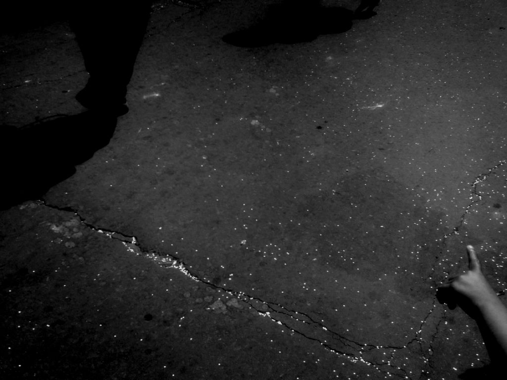
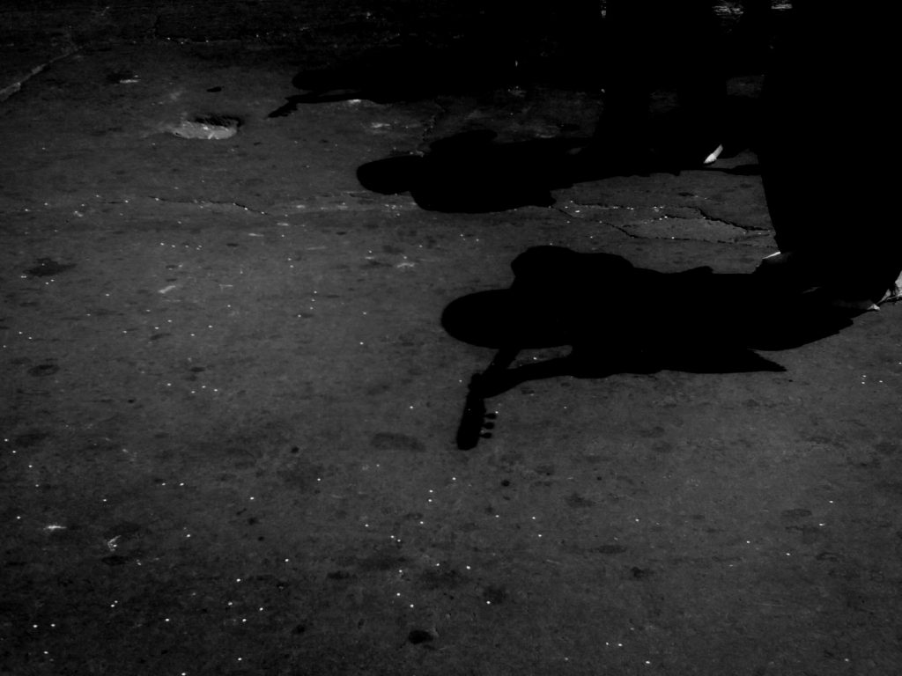
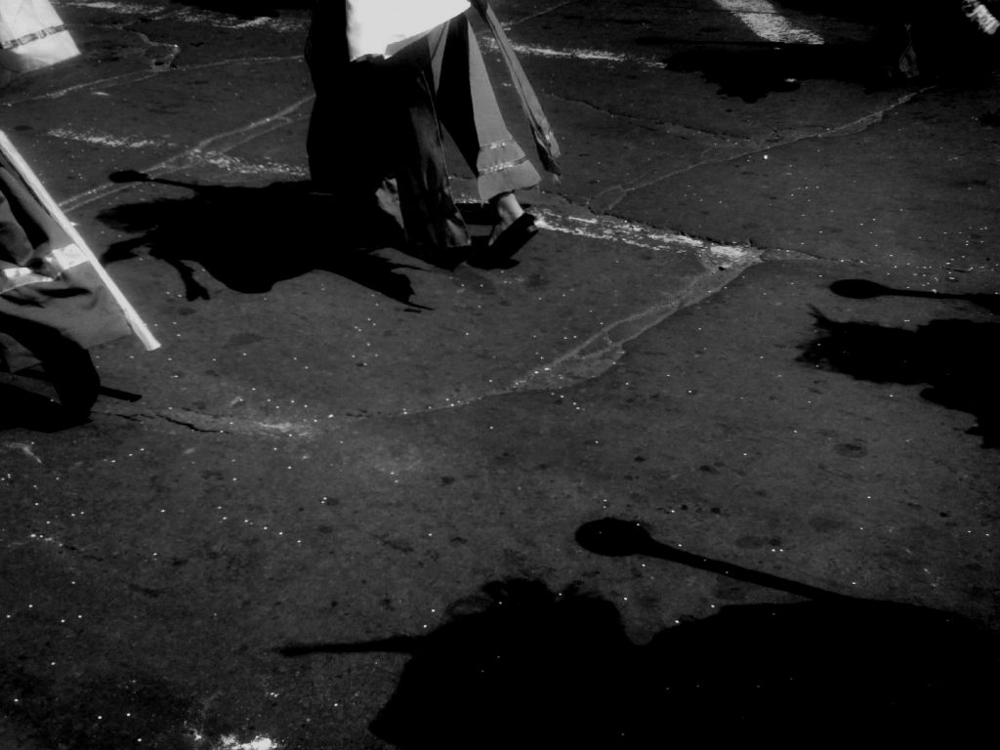

Podria escribirse una breve descripción de esta canción, idioma, el por que fue seleccionada, etc.
Roberto Roldán softextos@gmail.com
Ver a la gente en medio de los diferentes desfiles y actos de la programación oficial, desde la óptica del espectador como participe directo, en medio del juego, la lúdica y la algarabía, que nos convida y comparte el sentimiento de la fiesta popular.
En esta ocasión me concentro específicamente en el desfile de las colonias, que es, sin lugar a dudas uno de los espacios mas importantes de la fiesta de año nuevo, ya que concentra la diversidad étnica de la región sur de Colombia, en su capital Pasto. Todos hacemos parte de la cultura Nariñense y por lo tanto somos la “Pastusidad” que identifica nuestra ciudad en el Valle de Atriz, al pie del volcán Galeras.
Este desfile que tradicionalmente se realiza el 2 de enero de cada año, reúne a todos los Nariñenses radicados en la ciudad capital, a turistas que desde las diferentes regiones del territorio Nariñenses realizan un desplazamiento simbólico con la cultura a sus espaldas, generando la idea de una ciudad de retazos y fragmentos, de cosmovisiones que nos enriquecen y engrandecen como pueblo.
La visión que tengo como artista de esta concentración y desfile, se da por una identidad que se desvanece con la sombra de los individuos, convirtiéndonos a todos en seres humanos, en medio de “un mundo de sombras” que nos relaciona con la humanidad y con la civilización universal.
La concreción de imágenes en blanco y negro, nos conllevan a una atemporalidad teatral donde una serie de individuos desde lo regional se proyectan a la universalidad del pensamiento, y se desmaterializa de su propia realidad aparente, a simplificaciones visuales que nos permiten percibir una irrealidad simbólica y por que no decirlo al “Realismo Mágico” de una cultura que se encumbra en el Sur Andino Latinoamericano.
La magia del Arte consiste en ver mas allá de lo que todos esperan y sobre este imaginario construir el conocimiento de nuestra propia identidad cultural.
|  | |
|  |  |
|  | |
|  |  |
|  | |
|  |